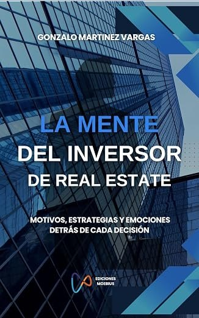
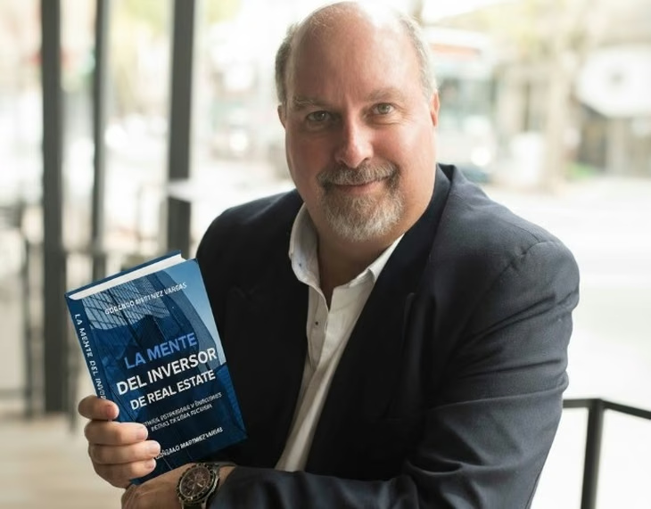
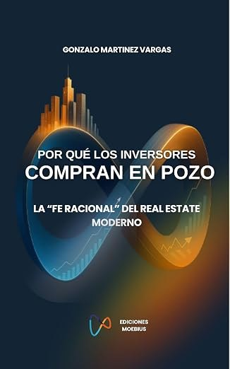

La mente del inversor de Real Estate
Comprender cómo piensan, deciden y actúan quienes invierten en inmuebles.
VER EN AMAZONCinco miradas complementarias sobre el mercado, el inversor y la comercialización inmobiliaria.


Comprender cómo piensan, deciden y actúan quienes invierten en inmuebles.
VER EN AMAZONRecuperar el criterio, formular mejores preguntas y decidir con mayor claridad.
VER EN AMAZONUna nueva mirada sobre el conocimiento del comprador y el valor del asesoramiento.
VER EN AMAZONIdeas y herramientas para comunicar y comercializar proyectos desde su origen.
VER EN AMAZON
Las motivaciones y decisiones que llevan a invertir antes de que el edificio esté terminado.
VER EN AMAZON